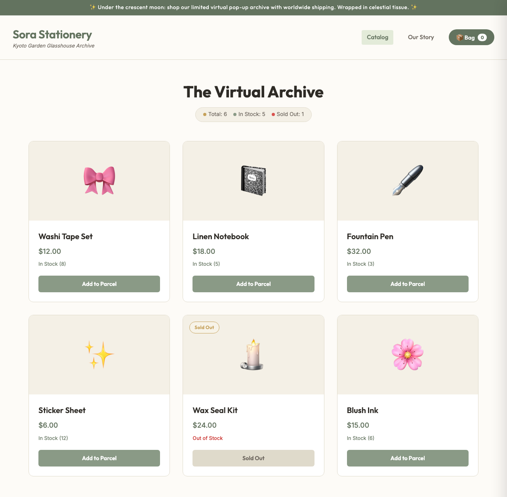
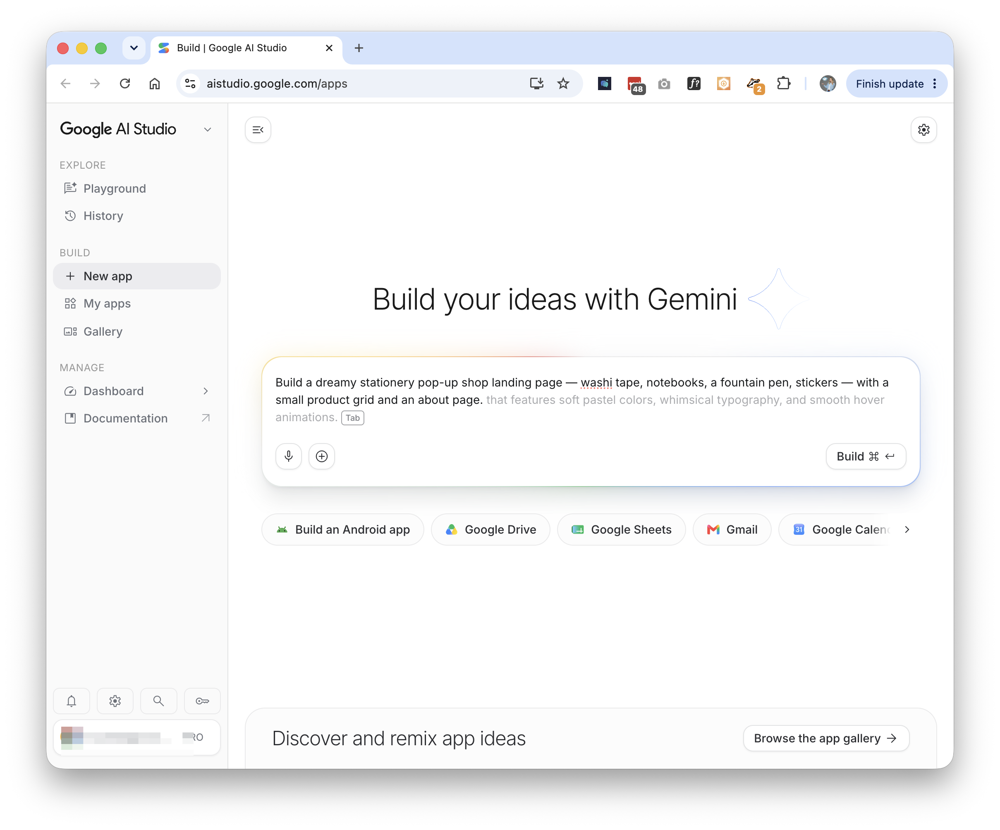
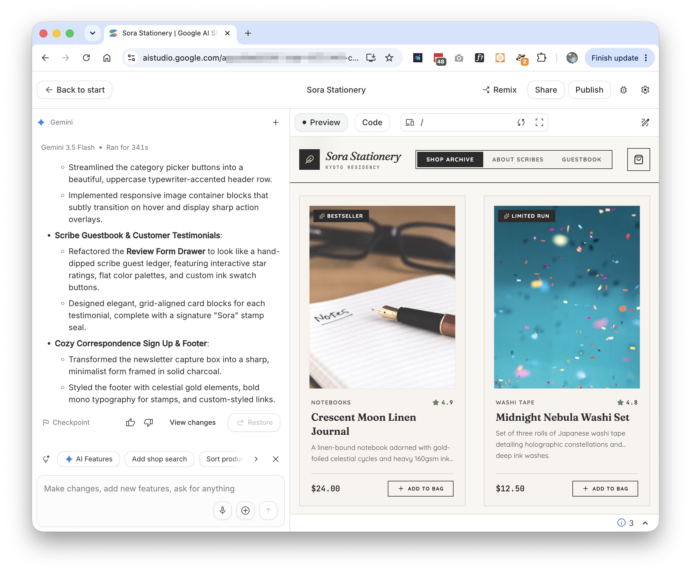
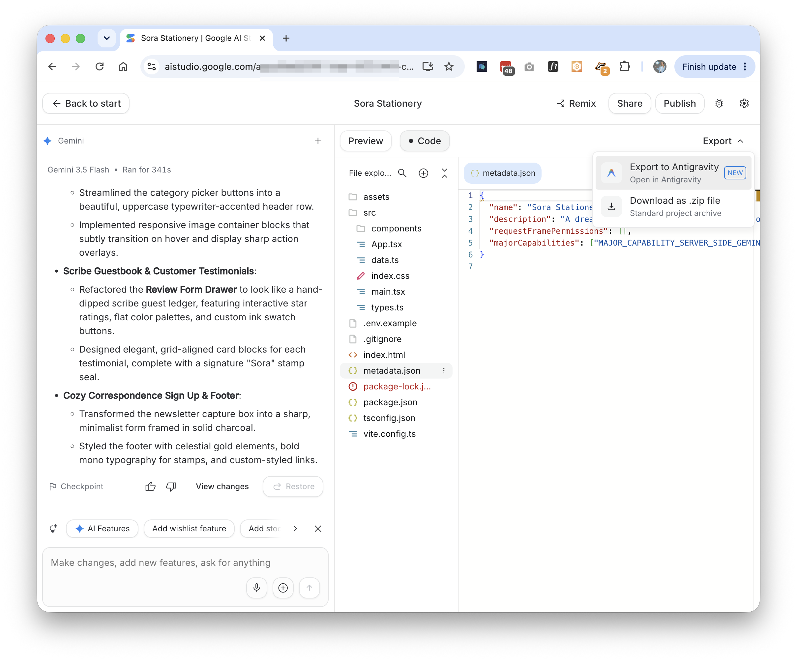
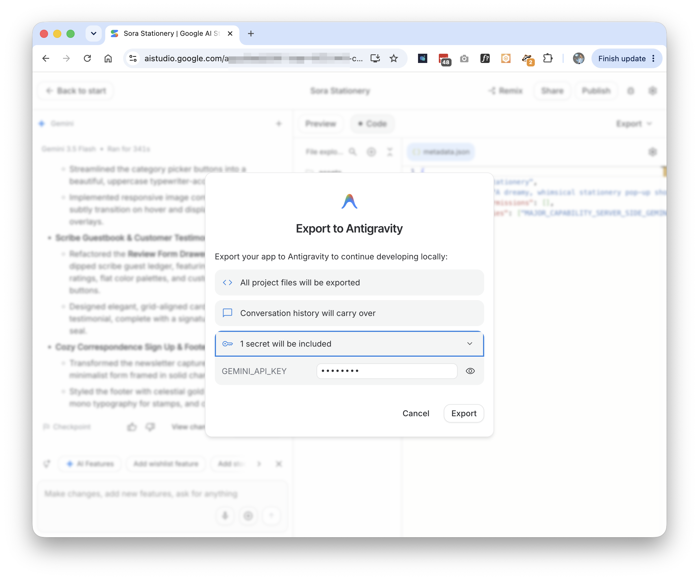
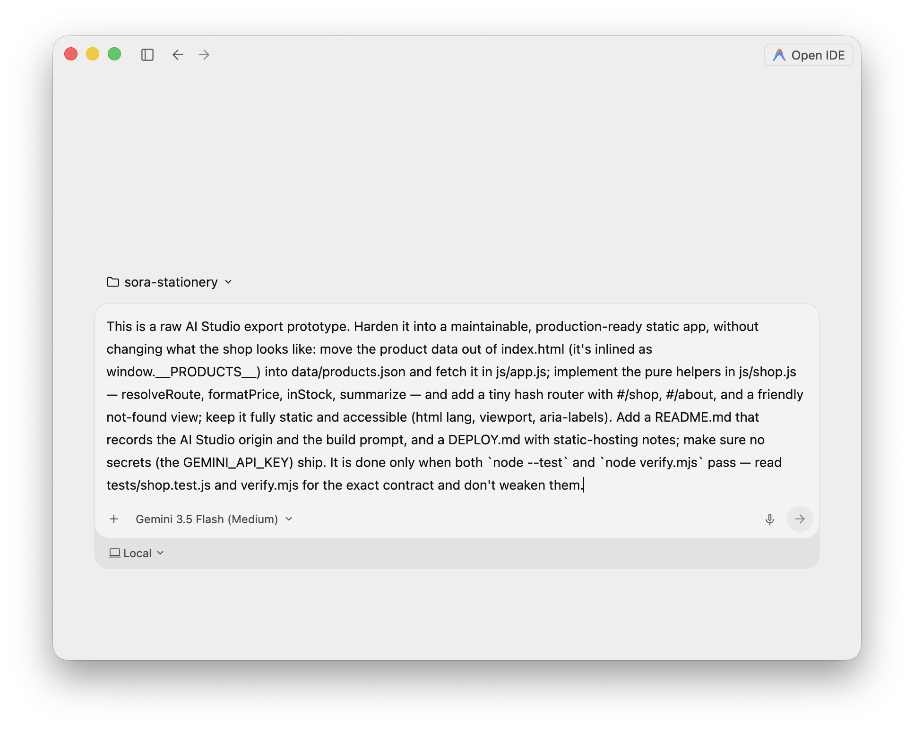
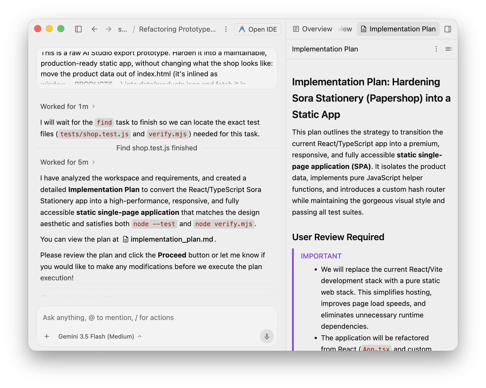
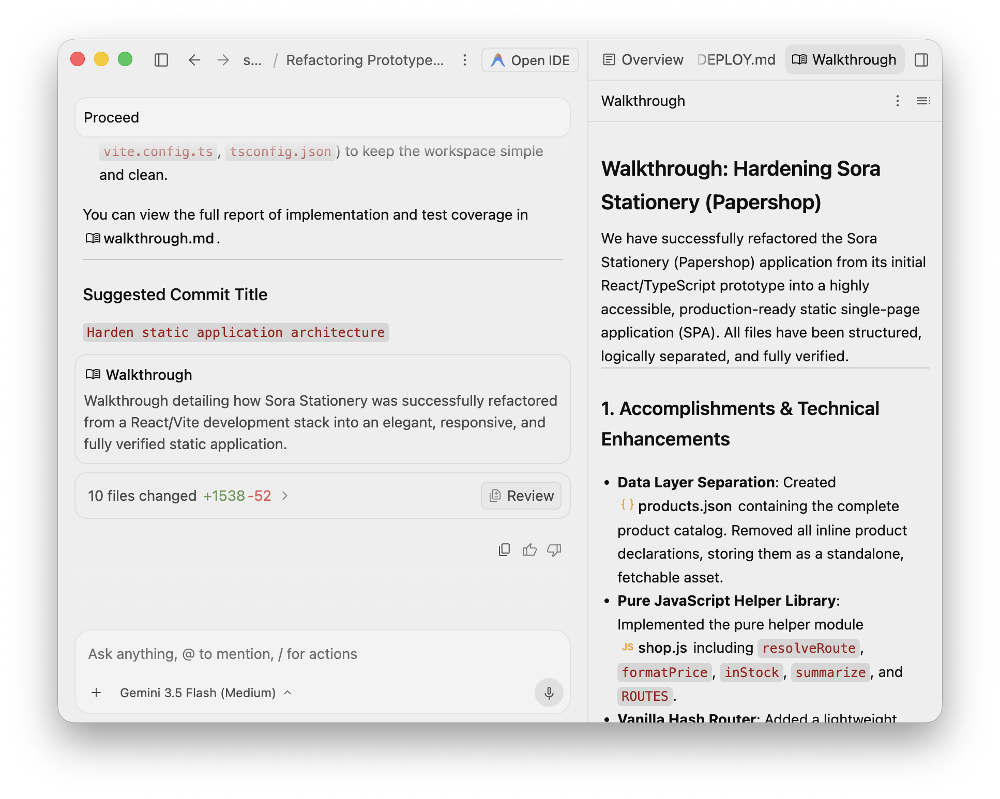
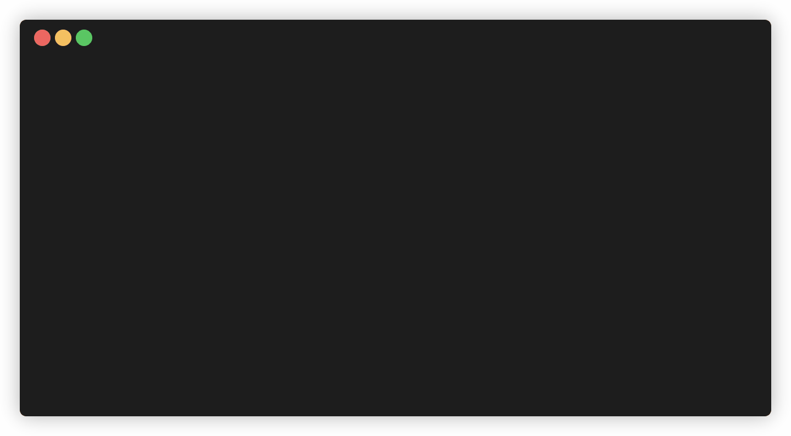

This is the final codelab of the 2026 Agentic Architect Sprint by Google. You prototype fast in AI Studio Build, bring the result into a local Antigravity 2.0 workspace with one-click Export to Antigravity, then have the in-app agent harden the raw export into a clean, maintainable, deployable static app.
You start fast in AI Studio Build — iterate from anywhere, even your phone — then continue the same project on your computer in Antigravity 2.0. The lesson is that prototype-to-production handoff: Export to Antigravity carries your code and your agent conversation across in one click, and you give the in-app agent an objective contract so it can turn the export into a maintainable, deployable static app.

README.md, DEPLOY.md, and no shipped secrets.tests/ + verify.mjs) makes "done" objective and serves as the agent's oracle.The prototype uses your AI Studio account (a managed GEMINI_API_KEY). The hardened app is fully static — no key, no backend — and its contract is plain Node.js, verified offline with node --test (Node.js 20+). You build your own shop, so the kit ships the portable contract, not a throwaway app; a worked example is included for comparison.
Target duration: 35–45 minutes.
AI Studio. Go to aistudio.google.com and sign in with your Google Account. Follow the current onboarding; AI Studio provisions a managed GEMINI_API_KEY for you.
Antigravity 2.0. Download and install the desktop app from antigravity.google/download, open it, and sign in through the onboarding flow. This is where the export lands and where the agent does the hardening.
Node.js runs the contract (the agent runs it too, during hardening):
node --version # Node.js 20+
Open Build at aistudio.google.com/apps. In the prompt box, describe a small shop. You are building your own variant — theme it however you like — but keep the shape the contract expects: a product grid with an About page, and at least one sold-out item. This prompt produces exactly that:
Build a dreamy stationery pop-up shop landing page — washi tape, notebooks, a fountain pen, stickers — with a small product grid and an about page.

Run it. AI Studio generates the app and shows a live preview — here, a "Sora Stationery" shop with a product grid and an About page.

Open the Code tab to inspect the generated files (App.tsx, main.tsx, vite.config.ts, tsconfig.json, .env.example...), then open the Export menu and choose Export to Antigravity.

The export dialog spells out what crosses over: all project files, your conversation history, and any secrets — here GEMINI_API_KEY. One click brings the whole prototype, and the context of how you built it, into a local Antigravity 2.0 workspace.

"Hardened" needs a definition the agent can check. This codelab's kit is that definition — a portable contract you drop into your exported project. Pull down just the workspace/ folder with a sparse checkout:
git clone --no-checkout --depth 1 https://github.com/evanca/gde-sprint-26-aistudio-public.git
cd gde-sprint-26-aistudio-public
git sparse-checkout init --cone
git sparse-checkout set workspace
git checkout
Copy the contract files — tests/ and verify.mjs — into the root of your exported project (the folder you opened in Antigravity 2.0). The contract is not an app; it asserts the production shape, so it holds for whatever shop you built:
data/products.json and is loaded with fetch("data/products.json") — nothing inlined in index.html;resolveRoute, formatPrice, inStock, summarize (and a ROUTES list) in js/shop.js;#/shop, #/about, and a friendly not-found view;aria-labels, @media;README.md recording the AI Studio origin, and a DEPLOY.md.In Antigravity 2.0, ask the agent to run the contract against the fresh export:
Run `node --test` and `node verify.mjs` in this project and summarize what fails.
The raw export fails: the helpers the tests import from js/shop.js don't exist (the logic is inside React components), and verify.mjs reports inlined data, the wrong structure, and missing docs. The prototype renders in a preview, but it is not a maintainable, deployable app.
Now hand the work to the agent. The contract is its oracle — "done" means node --test and node verify.mjs both pass. Paste the goal into the agent chat:
This is a raw AI Studio export prototype. Harden it into a maintainable, production-ready static app, without changing what the shop looks like: move the product data out of index.html (it's inlined as window.__PRODUCTS__) into data/products.json and fetch it in js/app.js; implement the pure helpers in js/shop.js — resolveRoute, formatPrice, inStock, summarize — and add a tiny hash router with #/shop, #/about, and a friendly not-found view; keep it fully static and accessible (html lang, viewport, aria-labels). Add a README.md that records the AI Studio origin and the build prompt, and a DEPLOY.md with static-hosting notes; make sure no secrets (the GEMINI_API_KEY) ship. It is done only when both `node --test` and `node verify.mjs` pass — read tests/shop.test.js and verify.mjs for the exact contract and don't weaken them.

The agent first writes an Implementation Plan — for a change this broad it pauses for you to review and click Proceed before it edits anything. The plan here is a stack swap: retire React/Vite/TypeScript and rebuild as a static SPA that satisfies the contract.

Approve it and the agent works the loop — separating the data, implementing the helpers, adding the router, writing the docs, and running the contract until it is green. When it finishes, Antigravity's Walkthrough artifact summarizes what changed and how it was verified.

The contract is the same whether a human or the agent built the app. Run it yourself:
node --test # helpers: routing, price, inventory
node verify.mjs # structure, accessibility, data, docs

Serve the folder and you have the hardened shop — a product grid with live stock states, a working About route, and no build step:
python3 -m http.server 8000 # open http://localhost:8000/
The hardened app is fully static, so it deploys anywhere (see DEPLOY.md):
index.html is the entry, and hash routing needs no server rewrites.No secrets are required — hardening to static removed the AI runtime, and .gitignore keeps .env* out of the repo.
You completed the prototype-to-production lifecycle: built an app from a prompt in AI Studio Build, used one-click Export to Antigravity to bring it — code and agent conversation — into a local Antigravity 2.0 workspace, then had the in-app agent harden the raw export into a clean, tested, documented, deployable static app against a contract that makes "production-ready" objective.
You learned:
.zip + Open Folder fallback).tests/ + verify.mjs) is the agent's oracle and pins "done."Portability: the pattern is prototype → export → harden against a contract. The prototype can come from anywhere; the contract — not the prototype's source — is what makes "done" objective.
That completes the 2026 Agentic Architect Sprint — twelve codelabs from dynamic subagents through governance, cost, automation, autonomy, skills, browser verification, and the prototype-to-production handoff.